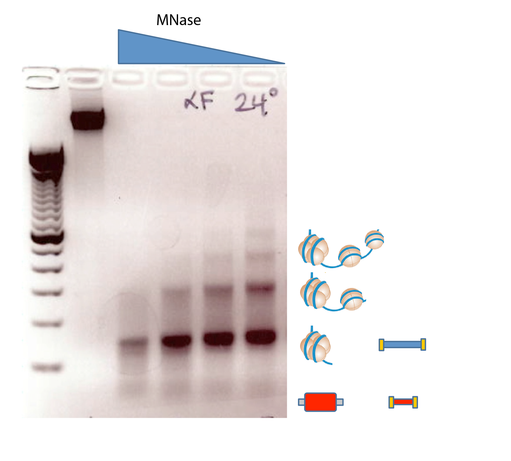
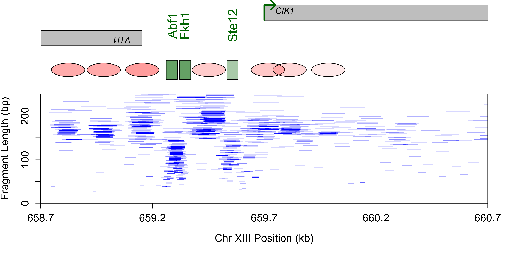

Spatiotemporal kinetics of CAF-1 dependent chromatin maturation
Department of Pharmacology and Cancer Biology
Duke University School of Medicine
CSH Asia 2021
Local chromatin enviroment regulates genomic activity

MNase 'footprinting' the genome

Henikoff et al., PNAS 2011
MNase 'footprinting' the genome

Henikoff et al., PNAS 2011
MNase 'footprinting' the genome


Chromatin regulation of CIK1

No mating pheromone
Chromatin regulation of CIK1
Mating pheromone
Rachel's initiation


Rachel Hoffman
Helicase activation in the absence of DNA replication

Hoffman et al., Genes Dev, 2021
Vinay's break


Vinay Tripuraneni
Replication independent restoration of chromatin following NHEJ

Tripuraneni et al., Genome Res, 2021
Epigenetic inheritance
Bonnie's assembly


Boning Chen 陈泊宁
Nascent chromatin occupancy profiling
Gutierrez et al., Genome Res, 2019
WT nucleosome assembly

Nascent chromatin rapidly matures

CAF-1 deposits nascent histone H3-H4 tetramers

Verreault et al, 1996; Yang et al, 2015
Loss of CAF-1 (Δ cac1) phenotypes
Enomoto and Berman, 1997; Kaufman et al, 1996; Bakel et al, 2013
Δ cac1 cells exhibit a defect in nucleosome spacing

Bakel et al, 2013
Loss of CAF-1 delays assembly

Heterogenous deposition of nucleosomes

Heterogenous deposition of nucleosomes

Transcription replaces/resets slow nucleosomes

Cryptic transcription initiates at slow nucleosomes

Bakel et al, 2013
Cryptic transcription initiates at slow nucleosomes
Bakel et al, 2013
Summary of Δ cac1 assembly defects
- Heterogenous nucleosome deposition
- Active transcription replaces/resets slow nucleosomes
- Cryptic transcription initiates at slow nucleosomes


Small fragments in Δ cac1 may represent subnucleosome structures

Small fragments in Δ cac1 may represent subnucleosome structures

MNase cuts are centered around the nucleosome dyad

MNase cuts are centered around the nucleosome dyad
MNase cuts are centered around the nucleosome dyad

MNase cuts are centered around the nucleosome dyad

Mixed population of small fragments in Δ cac1

Mixed population of small fragments in Δ cac1

Small fragments in Δ cac1 may represent H3-H4 tetramers

Small fragments in Δ cac1 may represent H3-H4 tetramers
Small fragments in Δ cac1 may represent H3-H4 tetramers

Summary

Acknowledgements
| MacAlpine Lab | Collaborators |
|---|---|
| Bonnie Chen | Jim Haber (Brandeis) |
| Rachel Hoffman | Steve Bell (MIT) |
| Vinay Tripuraneni | Chris Counter (Duke) |
| Kevin Moyung | Alex Hartemink (Duke) |
| Heather MacAlpine | |
| Funding | |
| NIH/NIGMS |